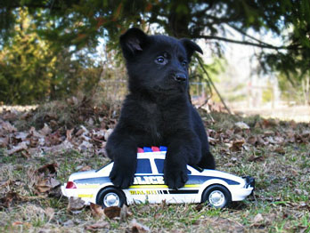

Overview
Catching “bad guys” involves elements of danger and risk. Therefore, police officers carry various equipment to protect themselves and the public. Over the years, science has been involved, both intentionally and unintentionally, in the development of some unique equipment used by law enforcement officers today.
The search for durable fibres to strengthen car tires, an initial goal of chemists, led to the creation of Kevlar. This material was subsequently used in bullet-resistant vests during the Vietnam War, a concept later adopted by police officers, saving many lives in the process.
The Conducted Energy Device (CED), commonly referred to as the Taser, is a recent invention that has helped officers apprehend violent and aggressive persons without having to resort to the use of deadly force. Pepper spray and tear gas are also used, both effective in subduing unruly crowds.

A puppy that will be trained to become a police service dog
Dogs that work in law enforcement are commonly referred to as police canines. The primary function of these specially trained dogs is to provide support to police officers working on the street by tracking and “chasing down” suspected criminals who try to flee police. Police canines and their handlers respond to many types of crimes, often those involving suspects who have fled on foot or who have tried to hide in enclosed spaces such as buildings or containers. Some police departments also use narcotic detection dogs trained to detect the presence of illegal drugs. Also, explosive detection dogs are used to detect explosives hidden from view.
"I'm not against the police; I'm just afraid of them."
- Alfred Hitchcock (English Film Director, 1899 - 1980